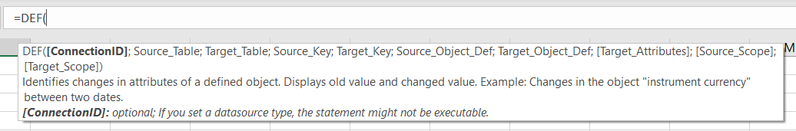

SQL Generators
Our SQL generators produce queries for common problem settings to save time when working with databases. They are available as an easy-to-use graphical interface and a worksheet function, which can be executed directly from a cell.
Visual interface
For every generator, the user interface is structured similarly. It consists of a Connection Overview, the generator's settings, a Query Editor, and the Control Panel (see Figure 1 below).
 Figure 1: Generator structure
Figure 1: Generator structure
We will look at each section one by one to get a deeper sense of their purpose.
Connection Overview
This overview simplifies work with multiple data sources. To create a statement for the correct one, it has to be selected from the drop-down menu in the top left corner. Mind, that it might take a couple of seconds for your database to be loaded. Once this is done, the schemas and tables with be listed in a "tree-view" structure to provide a better overview of your data.
Generator settings
To create queries with the proper schema, table, and column names, it is necessary to first select them in the settings. As every generator creates a different type of query, this section is different for each case. For detailed explanations and examples, please select the respective generator in the table of contents on the left-hand side. After filling the compulsory fields (marked by an asterisk), press the "Generate query" button.
Query Editor
To view the queries before executing them, they will appear in the Query Editor after pressing the "Generate query" button in the settings. More advanced users can also adjust the query when needed and will be assisted by syntax highlighting and text suggestions.
Control Panel
The final step before receiving the resulting table is to specify the output details. By default, a new worksheet will be created with the new table in the top left corner. However, you may also select an already existing worksheet and another cell to be the top left corner of the table. Mind, that if you overwrite data in another sheet with the resulting table, you will not be able to revert the changes. Therefore, make sure to be careful when selecting an existing sheet in the dropdown menu.
Furthermore, you have the option to leave out the table's column names, also known as the header. "Clearing Old Contents" will delete every cell entry to the left and below your selected cell.
Worksheet functions
Another way of using the generators is to call them as worksheet functions.
As for popular Excel functions like SUM, IF or UNIQUE, simply typing the name of a generator behind an = sign will show the parameters (see Figure 2).
 Figure 2: Generator Worksheet functions
Note, that executing a worksheet function will not execute the produced statement.
Instead, the statement itself will be pasted into the respective cell.
To view the resulting table, it is necessary to use the generator inside a SQL worksheet function.
For example: =SQL("YourConnectionID", DEF(...)).
Further information on the SQL Worksheet function can be found in the chapter on "EasySQL".